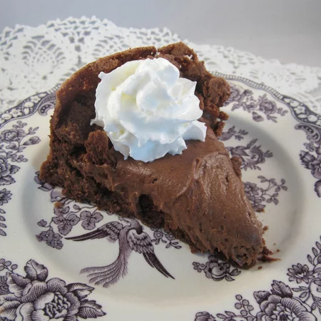

Flourless Chocolate Mousse Cake Recipe

Description
This blue cheese burger recipe has a prep time of 20 min
and a cooking time of 25 mins plus an additional 1 hr, which makes in total, a 1 hr 45 mins recipe, with 12 servings
Per serving: 300 calories; protein 4.4g; carbohydrates 24.2g; fat 21.1g; cholesterol 93.7mg; sodium 189.2mg.
Ingredients:
- 7 ounces bittersweet chocolate, chopped
- ⅞ cup margarine
- ⅞ cup white sugar, separated
- 6 eggs, separated
Steps:
- Preheat oven to 325 degrees F (165 degrees C).
- Melt chocolate and margarine together in a saucepan over low heat. Remove from heat and cool to room temperature.
- Beat half of the sugar and egg yolks together in a large bowl with an electric mixer until light and fluffy. Stir in chocolate mixture until just combined.
- Beat egg whites in a separate bowl with an electric mixer until foamy. Gradually add remaining sugar, continuing to beat until stiff peaks form.
- Spoon 1/3 of the chocolate mixture onto beaten egg whites using a rubber spatula. Gently run spatula around the edges of the mixture lifting the bottom up and over the center, repeating until well incorporated. Add remaining chocolate mixture, folding just until batter is smooth. Pour 3/4 of the batter into a 9-inch square pan.
- Bake in the preheated oven until edges are puffed and surface is firm, about 25 minutes. Set pan on a wire rack and allow cake to cool to room temperature, about 30 minutes. Spread remaining batter over cake. Refrigerate until completely chilled, at least 30 minutes more.